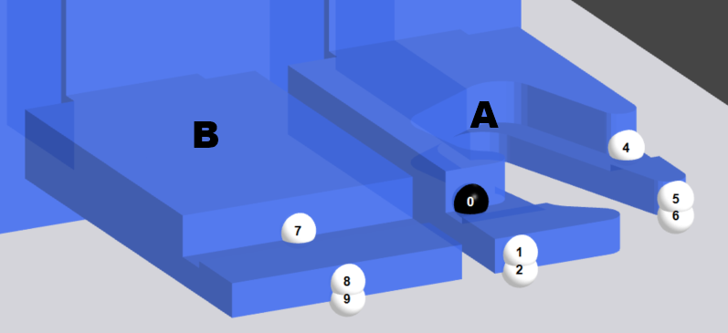

在该对话框中可更改后定规的位置或针对选定的折弯过程 所需的一个或多个折弯的所有行动或程序被称为折弯过程。设置新的后定规。通过错误符号识别无效后定规位置组合。
共有两种类型的后定规挡块：
- 标准型后定规挡块
- 角止挡机构后定规挡块
该后定规挡块不可用于角止挡机构。在大多机床中也结合配备了可用于角止挡机构的后定规挡块。
Fig.: 简图显示了标准型后定规挡块：

可用于所有后挡规。
Fig.: 角止挡机构后定规挡块示意图

Info: 以下解释适用于角止挡机构的后定规挡块，因为该种型号较为常用。所有信息也适用于标准型后定规挡块，涉及角止挡机构的情况除外。
选项
该选项用于后定规臂的定位和停车。
如果停止选项已启用，则后定规挡块的全部其他选项均禁用，除接触边缘选项之外。
NOTE: 如果停止选项已启用并且针对该后定规挡块已选定了不同的接触边缘，则停止选项将被禁用并且后定规挡块被设置在选定的接触边缘上。
通过该选项，后定规挡块被扣合 扣合表示将后定规挡块置于接触边缘或角上。在相关的接触边缘的角上。为了精确固定零件，至少需要4个止动点 是指后定规挡块上的一个点或面，可以用作接触边缘的止档。(A) 。

Fig.: 扣合在角上时的止动点。
NOTE: 仅当角止挡机构后定规挡块已安装时，才可使用该选项：
先择该选项用于圆边或角止挡机构。
如果由于后定规挡块的当前位置而无法进行角止挡，则仍可能通过改变在后定规臂上的后定规挡块进行止动。
按下分配按钮用于定义后定规停靠的接触边缘。所有可能的接触边缘均用黑线表示。
Info: 按下分配按钮可缩放红色显示的后定规接触边缘 (A)。
Fig.: 分配接触边缘

将后定规分配给一个边缘
- 按下分配按钮。
- 轻按您准备分配给后定规的接触边缘。
- 在应用对话框中定义准备应用的后定规位置。
Tip: 如果无法使用后定规挡块上的止停点来设置后定规，请使用参考点选项在后定规挡块上选择其他止停点。
该选项定义后定规挡块的哪个元件将停靠在折弯 折弯是指配置文件编程要素并且指定工件形状的变化。可以被分配给折弯的一系列属性：边长，折弯角度，折弯半径（可选），初始折弯角度（可选），额外的属性（可选）。折弯可包括若干折弯过程。零件的接触边缘上。默认情况下，每个后定规臂上都有一个直型后定规挡块和一个用于角止挡机构的后定规挡块。
您可在参数对话框中或通过按下更改按钮来选择参考点。
- 更改
在后定规挡块上选择一个参考数字，以便选择参考点。程序将放大带有参考点数字的后定规挡块。
角止挡机构 (A)
| 0/4 | 折弯零件置于后定规挡块上，顶靠后定规而定位。止停点也可用在角止挡机构上。 |
| 1/2 | 这些后定规边缘仅作为折弯零件的止挡。如果止动点(2)已选定，则后定规挡块可定位在短折弯边的下模上。 |
| 3 | 折弯零件置于后定规挡块上，顶靠螺栓而定位。 |
| 5/6 | 这些后定规边缘仅作为折弯零件的止挡。如果止动点(6)已选定，则后定规挡块可定位在短折弯边的下模上。 |
直型后定规 (B)
| 7 | 折弯零件置于后定规挡块上，顶靠后定规而定位。 |
| 8/9 | 这些后定规边缘仅作为折弯零件的止挡。如果止动点(9)已选定，则后定规挡块可定位在短折弯边的下模上。 |
Fig.: 后定规挡块上的参考平面

此选项用于打开或关闭后定规挡块上的传感器。此选项仅在后定规挡块上设有传感器时才可启用。
传感器检测料板是否顶靠着后定规挡块而正确定位。如果打开传感器时，料板未正确停靠后定规挡块，则无法执行下一个折弯过程。
该选项指定在折弯之前后定规挡块从接触边处回缩 回缩是指是后定规臂必须向后运动，以避免折弯部分的后定规挡块与折弯零件发生碰撞。一旦折弯零件在上模和下模之间夹紧，将执行回缩。的距离。回缩用于防止在折弯零件和后定规档块之间在折弯过程中的碰撞。
如果已经折弯的零件的折弯边指向下(B)，并且该零件压靠在后定规挡块(1)上，则必须设置回缩。
Fig.: 如果零件折弯边向下时，应采用后定规回缩(A)。

说明：
| A | 后定规挡块回缩最小距离 |
| B | 到折弯边止点的距离 |
| 1 | 后量规边缘 被压在用于精确定位的后定规挡块止动点上的折弯零件上的边缘。 |
| 2 | 在折弯过程中的侧面支点(B) |
NOTE: 当后定规已止动分配时，最小回缩数值为10 mm。
该选项定义与折弯零件接触边缘相对的后定规挡块的位置。有两种方法定位后定规挡块：
- 在Z 位置的输入栏中输入位置。
- 在3D视图中移动。
按钮
- 清除冲突
- 警告
- 错误
您可以清除过程、折弯、工位 工位包括一个或多个上模和下模的区段。或工件的警告和错误。
该功能确认并清除针对选定的折弯过程的警告。警告将以图标形式在模具名称之后显示。
Tip: 使用该警告功能可忽略选定的折弯过程。确认警告告诉系统，模具可用于该折弯过程。
该功能可为分配的模具清除错误。
Info: 该功能只有在可清除待处理错误时才能使用。